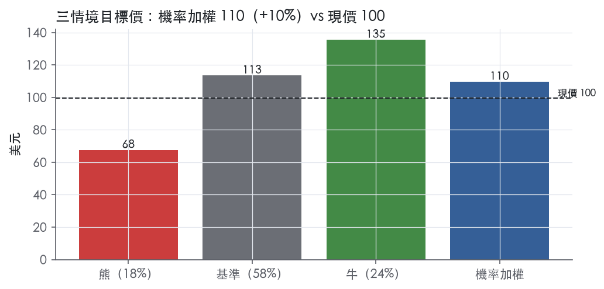
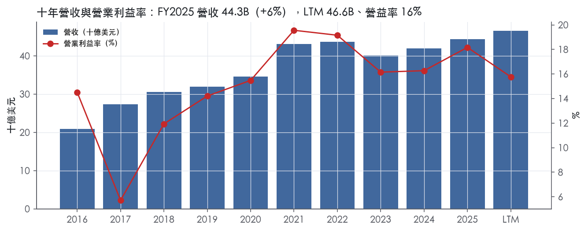
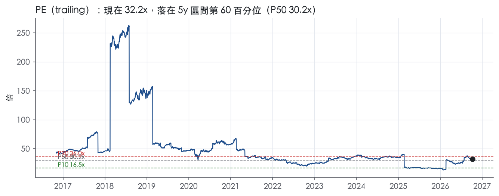
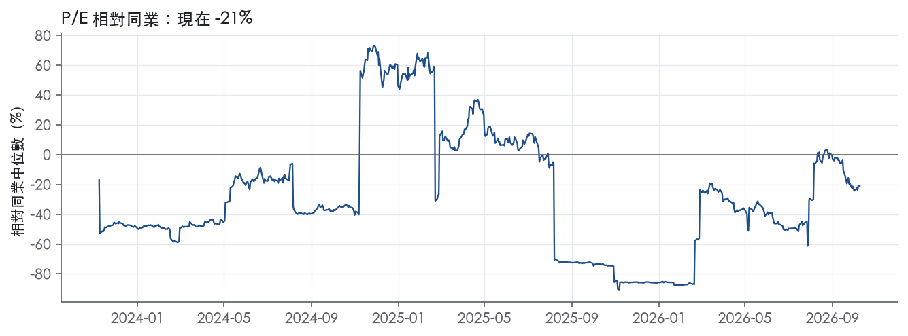
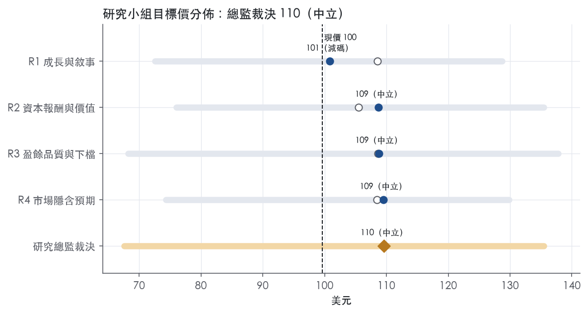
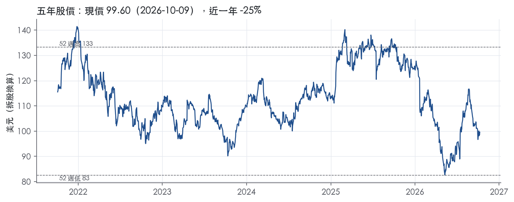

評等總表 › 醫療保健 › ABT
盈餘在整合谷底、倍數持平，中性｜評等 中立｜目標價 110
| 報告日 | 評等 | 目標價 | 當時股價 | 超額報酬 |
|---|---|---|---|---|
| 2026-10-09 | 中立 | 110 | 99.60 | +2.3% |
| 評等 | 中立（邊界，鄰近加碼） |
| 12 個月目標價 | 110 美元 |
| 現價 | 99.60 美元（2026-10-09） |
| 預期報酬 | 股價 +10.1%＋股息 2.5%＝總報酬 +12.5%；同業籃門檻 10.2%，超額 +2.3% |
| 估值方法 | P/E 30.0x，套在第 5–8 季的EPS（也就是一年後的未來四季） |
| 三情境 | 熊 68／基準 113／牛 135 |
| 研究流程 | 四位研究員兩輪辯論＋研究總監裁決 |
| 資料來源 | SEC EDGAR XBRL、Tiingo、FRED（全免費） |
盈餘在整合谷底、倍數持平，中性（研究總監裁決，四位研究員兩輪辯論後）
評等 中立（邊界，鄰近加碼）｜12 個月目標價 110 美元（總監三情境機率加權 110 與研究員中位數 109 各半）｜現價 99.60（2026-10-09）
預期報酬：股價 +10.1%＋股息 2.5%＝總報酬 +12.5%。同業籃門檻 10.2%，超額 +2.3%，離加碼的分界不到三個百分點，屬邊界評等（落在其他級距的機率約三成）。
估值方法：P/E 30.0x，套在第 5–8 季的EPS（也就是一年後的未來四季）。三情境：熊 68（18%）／基準 113（58%）／牛 135（24%）。
什麼會讓研究總監改變看法：3Q26 GAAP 營益率不低於 15.5% 且 comparable 不低於 7% 轉多、倍數上調至前瞻帶 P50 32x；3Q26 營益率低於 13.4% 或全年 comparable 指引下修轉空、倍數下調至 26x 以下。
| 過去四季（實際，FY2026Q2） | 未來四季 | 第 5–8 季 | 第 9–12 季 | |
|---|---|---|---|---|
| 營收（B） | 46.6B | 51.7B | 54.8B | 58.1B |
| 營收成長 | 8.1% | 11.0% | 6.0% | 6.0% |
| 營業利益率 | 15.8% | 14.3% | 15.3% | 16.0% |
| EPS（美元） | 3.10 | 3.29 | 3.78 | 4.23 |
| EPS 成長 | -61.3% | 6.3% | 15.0% | 11.9% |
| 每股股息（美元） | 2.48 | 2.48 | 2.48 | 2.48 |
| P/E（現價） | 32.2x | 30.3x | 26.3x | 23.5x |
| 股息殖利率（現價） | 2.5% | 2.5% | 2.5% | 2.5% |
過去四季為申報數字；預測為研究總監的假設、程式計算。倍數與殖利率都用現價計算，用來看現價對應各期獲利的高低。
| 情境 | 機率（歷史） | 故事 | 未來四季營收成長 | 第 5–8 季營益率 | 倍數 | 目標價 | 股價漲跌 |
|---|---|---|---|---|---|---|---|
| 熊 | 18%（15%） | 風險表第 1 條整合不順使營運面營益率卡在 13% 附近並扣利息代理，疊加第 3 條 Nutrition 續跌、第 5 條 Rapid/Molecular 與第 4 條去槓桿停滯；3Q26 comparable 未加速並下修指引，ROIC 跌破資本成本，倍數落到前瞻帶 P25 之下 | 9.5% | 12.2% | 24.0x | 68 | -32.1% |
| 基準 | 58%（57%） | 併表推高 NTM 營收、有機 5.5%–6%，營運面營益率自谷底回到 LTM 之上但被新債利息吃掉一部分，市場對修正後 GAAP EPS 付持平倍數 | 11.0% | 15.3% | 30.0x | 113 | 13.9% |
| 牛 | 24%（27%） | 下半年 comparable 達指引、Nutrition 於 4Q26 轉正、整合成本退場、FY2027 ROIC 回到 10.2% 之上，市場付回前瞻帶 P50 | 12.5% | 16.5% | 32.0x | 135 | 36.0% |
目標價由程式依研究總監的驅動與倍數計算；機率由研究總監給定。括號內是歷史頻率：把這檔股票過去十年 12 個月報酬的波動形狀，置中在基準情境，結果落在各情境附近的比例。

四位研究員用不同方法各自估值，回應研究總監的質疑後交出第二輪，最後由總監逐點裁決。各研究員的主張見第七章，裁決理由見第八章，完整論證見《研究底稿》。
| 立場（一輪→二輪） | 加權目標價（一輪→二輪） | 評等（一輪→二輪） | 第二輪倍數 | 熊～牛目標價 | |
|---|---|---|---|---|---|
| R1 成長與敘事 | 中性→中性 | 109→101 | 中立→減碼 | 31.0x | 73～129 |
| R2 資本報酬與價值 | 中性→中性 | 105→109 | 中立→中立 | 29.0x | 76～135 |
| R3 盈餘品質與下檔 | 中性→中性 | 109→109 | 中立→中立 | 30.0x | 68～138 |
| R4 市場隱含預期 | 中性→中性 | 108→109 | 中立→中立 | 28.0x | 74～130 |
| 研究總監裁決 | 中性 | 110 | 中立 | 30.0x | 68～135 |
目標價由程式依各自的驅動與倍數計算；評等＝機率加權總報酬 − 同業籃門檻。
Abbott是一家百年老牌多元化醫療保健公司，核心業務是健康醫療產品的研發、生產與銷售，橫跨處方藥、診斷、營養品與醫療器材四大領域¹。公司法律主體為伊利諾州公司，1900年設立¹。客戶群非常分散，涵蓋醫院、診所、藥局、政府機構、消費者、經銷商與批發商，依分部與地區而異，公司明確表示沒有單一客戶流失會對整體造成重大不利影響¹。簡單講，Abbott是一家「賣給醫療系統全鏈條」的公司——上游賣給實驗室與醫院做診斷與治療器材，下游直接賣給消費者嬰兒配方奶粉與血糖監測貼片，兩端都抓。LTM（至FY2026Q2）營收46.59B美元，規模足以支撐全球160多個國家的營運網絡¹。
2025年11月，公司宣布將收購Exact Sciences，目標是打入癌症診斷市場，交易尚待Exact Sciences股東同意與監管核准¹。這筆交易已在2026年3月23日完成，是近一年公司業務組合最大的變動²。
Abbott有四個報告分部：Established Pharmaceutical Products、Diagnostic Products、Nutritional Products、Medical Devices¹，各分部規模與成長速度差異很大，Medical Devices是現金牛也是成長引擎，Nutrition則是拖累。
Established Pharmaceutical Products：品牌學名藥組合，在美國以外的新興市場製造、行銷與銷售，產品線涵蓋腸胃科（Creon、Duphalac）、婦女健康（Duphaston、Femoston）、心血管代謝（TriCor、Synthroid）、疼痛與中樞神經（Brufen）、呼吸道與疫苗（Klacid、Influvac）及生物相似藥¹。2Q26該分部全球營收1,499M美元，年增8.4%（報告基礎）、comparable成長8.7%，全部來自國際市場（美國部分為零）³。其中Key Emerging Markets（拉美、亞太多國雙位數成長）comparable成長10.7%，是分部主要引擎³。
Diagnostic Products：涵蓋核心實驗室（Alinity、ARCHITECT）、分子診斷（Alinity m）、照護現場（i-STAT）、快速診斷（BinaxNOW、ID NOW）與資訊化自動化解決方案¹。2026年起公司將Rapid Diagnostics、Molecular Diagnostics、Point of Care三塊整併為Rapid and Molecular Diagnostics，並新增Cancer Diagnostics業務線（即收購Exact Sciences後的Cologuard、Cancerguard產品）³。2Q26 Diagnostics總營收3,092M美元，報告基礎年增42.3%（主要是併購貢獻），comparable成長僅2.9%³；其中Cancer Diagnostics單季919M美元，comparable成長13.3%，靠Cologuard中段雙位數成長帶動³，而Rapid/Molecular Diagnostics因呼吸道病毒檢測需求下滑，comparable衰退8.0%³。
Nutritional Products：嬰幼兒與成人營養品，嬰兒配方奶粉以Similac系列為主，成人線包括Ensure、Glucerna、Pedialyte¹。這是四個分部中唯一持續衰退的業務：2Q26報告基礎衰退3.1%，comparable衰退3.6%，公司解釋是銷量下滑疊加2025年Q4的策略性調價影響，但新品上市與調價效應已帶動營收連續季增（2Q26比1Q26增加127M美元）³。
Medical Devices：最大分部，產品線最廣，涵蓋節律管理（Aveir、Gallant ICD）、電生理（Volt PFA系統、TactiFlex）、心衰竭（HeartMate、CardioMEMS）、血管（XIENCE支架）、結構性心臟病（MitraClip、Navitor）、糖尿病照護與連續血糖監測（FreeStyle Libre、Lingo）、神經調節（Proclaim、Infinity DBS）¹。2Q26總營收5,853M美元，是全公司最大單一分部，報告基礎年增9.0%，comparable成長8.4%³；其中Diabetes Care（主要是FreeStyle Libre）單季2,188M美元，電生理與心衰竭都呈雙位數成長³。10-K未揭露各分部占總營收的具體百分比，僅在最新8-K有季度美元數字可供比較。
Abbott的通路設計是「依地區分流、依分部客製」，不是單一全球統一通路。Established Pharmaceutical Products銷售對象是批發商、經銷商、政府機構、醫療機構、藥局與獨立零售商，部分產品採共同行銷或授權模式¹。Diagnostic Products賣給血庫、醫院、商業實驗室、診所、醫師診所、零售商、政府機構及血漿蛋白治療公司¹。Nutritional Products直接賣消費者，也賣機構、批發商、零售商、醫療機構¹。Medical Devices在美國主要賣批發商、醫院、門診手術中心、醫師診所、消費者與經銷商，美國以外則直接或透過經銷商銷售，依市場而定¹。
地區結構上，美國以外市場是公司的主要成長來源。2Q26總營收美國5,216M美元、國際7,377M美元，國際占比明顯更大³；國際成長7.5%快於美國但主要被Diagnostics的併購基數效果拉高（美國22.0% vs 國際7.5%，報告基礎）³。Established Pharmaceuticals完全沒有美國業務，100%來自國際新興市場³。公司僱用約115,000人，69%在美國以外¹，人員地理分布也呼應業務以全球為主、非美國集中型公司的特質。
FY2025Q3（9月底）營收11.37B美元，年增6.9%，毛利率55.4%，營益率18.1%（is/bs資料包，期別FY2025Q3）。FY2025Q4營收11.46B美元，年增4.4%，毛利率拉高到57.0%，營益率回升至19.6%，是近八季獲利率最高的一季（資料包期別FY2025Q4）。FY2026Q1因完成Exact Sciences併購，營收跳升至11.16B美元，報告基礎年增7.8%，但comparable成長僅3.7%，GAAP稀釋EPS 0.61美元、調整後EPS 1.15美元反映6%成長²；當季管理層給出全年guidance：comparable銷售成長6.5%至7.5%、調整後EPS 5.38至5.58美元（含併購稀釋0.20美元）²。
FY2026Q2營收12.59B美元，報告基礎年增13.0%、comparable成長4.8%，GAAP稀釋EPS 0.53美元、調整後EPS 1.31美元³；公司重申全年comparable成長guidance 6.5%至7.5%，並把全年調整後EPS guidance上修至5.45至5.60美元（前次guidance為5.38至5.58美元）³。CEO Robert Ford表示：「我們預期這個動能將持續，並在下半年帶動加速的營收與獲利成長」³。值得一提的是，FY2026Q1與Q2營益率明顯低於FY2025同期（12.0%、13.4% vs FY2025Q2的18.4%），主要是併購後的攤銷與整合成本壓縮了短期利潤率（資料包8季表，期別FY2026Q1/Q2）。公司在2Q26同時將2.1B美元回饋股東，形式是股利與庫藏股³，並宣布第409次連續季度股利，派息已連續54年上調，是S&P 500 Dividend Aristocrats成分股²。
公司明確把Exact Sciences併購定位為切入快速成長的腫瘤診斷市場、為投資組合增加新的高成長垂直領域²。在Medical Devices，公司持續強調電生理（PFA脈衝電場消融）、心律管理與心衰竭產品線的臨床數據，例如HRS年會上展示PFA與傳導系統節律調控（CSP）組合的強勁臨床結果³；糖尿病照護方面推出Libre Duo雙感測器（全球首款同時監測血糖與酮體的穿戴式生物感測器）³，以及FreeDM2試驗證實FreeStyle Libre能降低糖化血色素並延長血糖健康範圍時間²。在Diagnostics，公司強調Cologuard與Cancerguard的使用者基礎擴大帶動Cancer Diagnostics雙位數成長³。在Nutrition，公司將2025年Q4的策略性調價與新品上市視為扭轉營收衰退的手段³。
綜合來看，Abbott目前的成長故事有三個支柱：Medical Devices的器材創新週期（PFA、糖尿病照護）、Diagnostics靠併購跨入腫瘤篩檢的新賽道、以及Established Pharmaceuticals在新興市場的穩定雙位數成長。Nutrition短期內仍是拖累項，公司的調價與新品策略要到下半年才能看到volume回升的效果，值得後續追蹤。整體而言，Exact Sciences併購雖然在短期稀釋EPS並壓低營益率，但公司管理層已將其視為下半年加速成長的關鍵拼圖，從guidance上修動作看，執行進度暫時符合甚至略優於預期。

Abbott 評為窄護城河。它有兩項真實的競爭優勢：品牌與法規許可構成的無形資產，以及診斷儀器與植入式器材的轉換成本。但過去十年的 ROIC 只比資本成本高一點，撐不起「10 年以上有把握」的寬評級。趨勢判為穩定：FY2021 以來 ROIC 每年都高於資本成本，只是 Exact Sciences 併購把投入資本墊高，短期報酬率會被稀釋，所以不給「變寬」。
無形資產（品牌、專利、法規許可）是第一來源。
轉換成本是第二來源，集中在診斷與器材兩個分部。
網路效應、成本優勢、效率規模在原文中找不到具體證據，不列入。
數字只部分支持護城河：毛利率非常穩，ROIC 則不夠高也不夠穩。
支持的一面：毛利率穩定。 毛利率十年平均 56.5%，標準差只有 1.2%，區間 54.7% 到 58.5%。這段期間經歷大型併購、疫情檢測需求暴起暴落與通膨，毛利率幾乎不動，代表定價權確實存在。
不支持的一面：ROIC 偏低且波動大。
我們仍維持「窄」而不降為「無」，理由有三：
但 FY2025 的 11.3% 已經很接近門檻，FY2021 的高點又含疫情檢測紅利。所以我們只有把握 5 年以上，不到 10 年。
一、技術優勢會被追上。 公司自己承認，診斷與器材的技術優勢可能隨競爭者推出新產品而縮小或消失，部分產品有快速過時的風險¹。
二、支付方壓價。 美國 Medicare 對包含糖尿病產品在內的耐用醫療設備、腸道營養品實施競標制度¹。WIC 計畫則要求各州透過競標向嬰兒配方奶粉廠商取得回扣¹。這直接衝擊 FreeStyle Libre 與 Similac 兩個核心品牌的定價權。
三、學名藥與自有品牌替代。 學名藥替代處方品牌會增加成熟藥品的競爭壓力¹。營養品則面臨自有品牌與在地廠商的壓力¹。
四、Exact Sciences 併購稀釋資本報酬。 總債務從 FY2025Q4 的 12.93B 跳到 FY2026Q1 的 34.05B 美元。同期營益率降到 12.0% 與 13.4%。投入資本大增而利潤率被攤銷壓低，ROIC 未來兩年跌破資本成本的機率不低。若 FY2027 ROIC 仍低於資本成本，我們會把趨勢下修為「變窄」。
目標倍數應與同業持平，不給溢價。理由是 ROIC 平均只高於資本成本 0.8%，超額報酬太薄，不足以支撐長期溢價，加上併購會在近期壓低資本報酬。估值研究員不應以 10 年 P/E 中位數 36.6x作為均值回歸目標：那段期間的高倍數建立在利率較低的環境，以及疫情期間膨脹的 ROIC 上。
| 指標 | 最新 | 十年平均 | 標準差 | 最低 | 最高 |
|---|---|---|---|---|---|
| ROIC | 11.3% | 11.0% | 4.2% | 2.8% | 16.5% |
| 毛利率 | 56.4% | 56.5% | 1.2% | 54.7% | 58.5% |
| 營業利益率 | 18.2% | 15.1% | 3.8% | 5.7% | 19.6% |
| FCF 利潤率 | 16.7% | 15.5% | 2.7% | 10.0% | 20.1% |
| ROE | 13.1% | 15.0% | 7.8% | 1.9% | 31.1% |
程式計算。資本成本代理值（10 年債＋5%）：10.2%；ROIC 平均減資本成本：0.8%；ROIC 有資料的 9 年中，高於資本成本 6 年。
ABT 現金流對淨利的覆蓋度長期優於 1 倍、應計比率為負值，顯示盈餘品質的核心指標健康，但 LTM 淨負債／EBITDA 已跳到 2.50x，且近兩年淨利率出現 FY2023→FY2024 +18pp、FY2024→FY2025 -17pp 的劇烈跳動（量化底稿紅旗），需要拆解一次性項目後才能判斷真實盈餘能力。
LTM 營業現金流／淨利 1.83x、自由現金流／淨利 1.44x，兩者都在綠燈區，代表 LTM 盈餘有現金支撐、不是靠應計堆出來的。但近三年平均已降到 CFO/淨利 1.12x、FCF/淨利 0.83x，低於 LTM 和十年平均（2.63x／2.02x），顯示過去三年的現金轉換效率明顯弱於長期均值，這與 FY2026Q1-Q2 因收購整合、利息支出上升而壓縮營益率有關。應計比率 LTM 為 -4.1%、近三年僅 +0.2%、十年平均 -3.3%，全部落在綠燈，沒有盈餘靠應計堆砌的證據。唯一要留意的是應收帳款成長－營收成長在 FY2025 達 +8.8pp（黃燈），代表營運資金有被應收帳款吃掉盈餘的跡象，但幅度未達紅燈的 15pp 門檻。
2Q26 GAAP 稀釋 EPS 為 0.53 美元，調整後（non-GAAP）稀釋 EPS 為 1.31 美元，中間差了 0.78 美元³。新聞稿本身只給出 GAAP 與 adjusted 兩個數字，並未在節錄段落中逐項列出調整科目（如 SBC、無形資產攤銷、重組費用）的金額³；但公司明確表示 adjusted EPS「excludes specified items」³。考慮到 Exact Sciences 收購已於 2026 年 3 月完成且伴隨新增約 20B 美元借款⁴，可以合理推斷 2Q26 GAAP 與 adjusted 之間的落差主要來自收購相關的無形資產攤銷、交易成本與整合費用。這類攤銷與交易成本屬於非現金或一次性項目，分析師在評估「經常性」盈餘能力時可以部分採信調整後數字，但不能忽略攤銷背後代表的真實商譽/無形資產消耗。SBC／營收長期穩定在 1.5%–1.6%（十年平均與 LTM 一致，量化底稁），屬低幅度，不是盈餘灌水的主要來源。
總債務在 FY2025Q4 為 12.93B 美元（資料包），到 FY2026Q1 一次跳升到 34.05B 美元、FY2026Q2 為 32.61B 美元（資料包），對應公司揭露的 Exact Sciences 收購融資計畫：以約 20B 美元借款支應收購⁴。這筆增量負債直接推升 LTM 淨負債／EBITDA 至 2.50x，落在黃燈區間（量化底稿規則：≤1.50x 綠、>3.00x 紅），但尚未觸及紅燈門檻。利息保障倍數 LTM 9.59x 仍優於綠燈門檻 8.00x，顯示即使槓桿上升，付息能力目前無虞。股東回饋方面，2Q26 公司以股利與回購形式對股東返還 2.1B 美元³，LTM（股利＋回購）／淨利達 112.3%（量化底稁），超過 100% 代表短期內回饋股東的現金支出超過當期淨利，需靠資產負債表或舉債空間支撐，這點在新增 20B 美元收購負債後更值得留意。10-K 也明確警示，額外舉債可能導致信評被調降、提高未來融資成本，並可能附加更嚴格的限制性條款⁴。稀釋股數年變動 LTM 為 -0.2%，顯示回購持續小幅減少股數，而非靠增發稀釋墊高每股數字。
淨負債／EBITDA 黃燈（LTM 2.50x）：真實槓桿上升，非口徑問題——直接對應 20B 美元 Exact Sciences 收購融資計畫⁴與 FY2026Q1 總債務從 12.93B 跳升至 34.05B 美元（資料包）。這是真問題但屬於可解釋的一次性併購融資，而非經常性現金流惡化，後續觀察重點是整合後 EBITDA 能否追上新增利息負擔。
應收帳款成長－營收成長 +8.8pp 黃燈（FY2025）：幅度不算嚴重（未達 15pp 紅燈門檻），節錄的 MD&A 與新聞稿未提供足夠細節解釋成因，暫列為待觀察項目而非確認的盈餘灌水證據，但建議後續追蹤是否與國際市場收款天數拉長有關。
淨利率 FY2023→FY2024 +18pp 跳動（程式紅旗）：FY2024 淨利 13.40B 美元、EPS 7.64（資料包）大幅高於 FY2023 淨利 5.72B、EPS 3.26（資料包），節錄的 10-K Item 7 MD&A 內文未包含具體數字拆解一次性項目（本次節錄落在 Item 1/1A，未涵蓋 Item 7 細節），無法在本次材料中找到逐項證據，列為待後續查核的未解釋跳動，暫不計入核心盈餘品質評分但須提醒估值端留意。
淨利率 FY2024→FY2025 -17pp 跳動（程式紅旗）：同樣缺乏本次節錄材料中的逐項拆解，FY2025 淨利回落至 6.52B、EPS 3.72（資料包），方向上與 FY2024 的異常高點對稱回歸一致，較可能是 FY2024 存在未解釋的一次性正向項目後的正常化，而非 FY2025 本身出問題，但同樣因缺乏原文證據列為未完全解釋項目。
現金轉換與應計比率支持核心盈餘可信，估值可以用 LTM 數字為主，但對 FY2024 異常高的淨利／EPS（13.40B／7.64）與 adjusted EPS 與 GAAP EPS 之間 0.78 美元的落差（2Q26）都應以 GAAP 為準繩、對非 GAAP 調整後數字打折使用，因為缺乏逐項金額佐證其是否全為非經常性。槓桿從低位快速升至 2.50x 淨負債／EBITDA，雖未觸紅燈，但疊加 20B 美元收購融資與可能的信評調降風險⁴，建議在可比倍數上給予保守端（優先參考 5 年 P10–P50 區間而非歷史高點）而非上緣倍數。
| 項目 | LTM | 近三年 | 十年 | 燈號 | 規則 |
|---|---|---|---|---|---|
| 營業現金流／淨利 | 1.83x | 1.12x | 2.63x | 綠 | ≥1.00x 綠、<0.80x 紅 |
| 自由現金流／淨利 | 1.44x | 0.83x | 2.02x | 綠 | ≥0.90x 綠、<0.60x 紅 |
| 應計比率（(淨利−CFO)／平均總資產） | -4.1% | 0.2% | -3.3% | 綠 | ≤0.0% 綠、>5.0% 紅 |
| SBC／營收 | 1.5% | 1.6% | 1.5% | 綠 | ≤3.0% 綠、>8.0% 紅 |
| 淨負債／EBITDA | 2.50x | 0.58x | 1.31x | 黃 | ≤1.50x 綠、>3.00x 紅 |
| 利息保障倍數（營業利益／利息） | 9.59x | 12.9x | 9.93x | 綠 | ≥8.00x 綠、<3.00x 紅 |
| 稀釋股數年變動 | -0.2% | -0.3% | 2.0% | 綠 | ≤0.0% 綠、>3.0% 紅 |
| （股利＋回購）／淨利 | 112.3% | 66.2% | 117.9% | 綠 | ≥50.0% 綠、<0.0% 紅 |
| 應收帳款成長 − 營收成長（FY2025） | +8.8pp | — | — | 黃 | ≤5pp 綠、>15pp 紅 |
| 存貨成長 − 營收成長（FY2025） | -0.9pp | — | — | 綠 | ≤5pp 綠、>15pp 紅 |
程式計算；燈號以 LTM（無則近三年平均）判定。
| 風險 | 觸發指標（看什麼數字、在哪裡看） | 對 EPS 的影響方向與粗略幅度 | 未來 12 個月發生機率（高／中／低） | 出處 |
|---|---|---|---|---|
| Exact Sciences併購整合風險（商譽、攤銷、負債） | 商譽24.0B美元是否減損（10-K年報揭露）；季度營益率是否持續低於FY2025同期水準（FY2026Q1營益率12.0%、Q2 13.4% vs FY2025Q2的18.4%）；20B美元過渡期貸款動用與償還進度（8-K） | 負向，中－大：FY2026Q1 GAAP EPS 0.61、Q2僅0.53，遠低於FY2025同期（0.76、1.01） | 高 | ⁴³ |
| IRS與海外稅務爭議（2017-2020年SNOD累計超過1B美元，馬來西亞413M美元稅務評估） | 美國稅務法院判決時程；馬來西亞上訴法院判決結果；Note 15揭露的不確定稅務準備金變動 | 負向，中：單一SNOD金額192M－443M美元，若多筆同時不利裁決可觀 | 中 | 10-K 年報 FY2025 Item 1A（風險因素） |
| Nutrition分部持續衰退，拖累集團毛利結構 | 季度comparable銷售成長（2Q26為-3.6%，1H26為-5.6%）；季度環比是否持續回升（2Q26比1Q26增127M美元） | 負向，中：Nutrition占2Q26總營收2,144M美元／12,593M美元，衰退若未扭轉會持續侵蝕整體毛利率 | 中 | 8-K 財報新聞稿（2026-07-16） |
| 利率與再融資風險（總債務32.61B美元，含併購後新增債務；2026年到期3.0B美元本金） | 10年期美債殖利率（目前5.22%）；公司信評是否被下調（目前AA-/Aa3）；再融資利率與到期前利率比較 | 負向，中：利息支出若上升會直接吃淨利，FY2025利息支出淨額185M美元基期已低 | 中 | 10-K 年報 FY2025 Item 1A（風險因素） |
| Rapid/Molecular Diagnostics呼吸道檢測需求下滑 | 季度comparable成長（2Q26為-8.0%）；COVID-19相關檢測營收年度趨勢（2025年僅297M美元，2023年1.6B美元） | 負向，小－中：此業務線已明顯萎縮，若未被Cancer Diagnostics成長抵銷會拖累Diagnostics整體利潤率 | 中 | ³⁴ |
Exact Sciences併購整合是目前最大的可觀測風險。公司為此募集20.0B美元過渡性貸款，交易對價約21B美元股權價值、23B美元企業價值，吸收Exact Sciences約1.8B美元淨負債⁴。併購完成後，FY2026Q1與Q2的營益率明顯低於FY2025同期（12.0%、13.4% vs 18.4%）【判，依資料包8季表】，顯示攤銷與整合成本正在吃掉營業利潤。商譽餘額已達24.0B美元⁴，若收購標的未來現金流不如預期，減損測試會直接衝擊帳面淨利（雖非現金項目，但會影響市場對ROE/ROIC的評價）。這條風險的可監測性最高：每季看營益率與商譽減損公告即可追蹤。
稅務爭議是長尾但金額具體的風險。公司目前與IRS就2017-2020年四個稅務年度均收到Statutory Notice of Deficiency，合計評估金額逾1B美元（192M＋417M＋443M美元），均已提交美國稅務法院訴訟中，尚未解決⁴。另外馬來西亞稅務機關就2023年一筆公司間股權出售課徵413M美元財產資本利得稅，Penang高等法院已於2025年10月維持原評估，公司已上訴至馬來西亞上訴法院⁴。這些訴訟時程以年計，一旦任何一筆最終敗訴，會一次性計入當期稅負，直接拉低淨利（2024年即曾因一次性非現金稀釋發生7.5B美元估值準備金調整影響稅負，顯示稅務項目對淨利波動的量級可以很大）⁴。
Nutrition分部的結構性衰退尚未反轉。2Q26該分部報告基礎衰退3.1%、comparable衰退3.6%，1H26 comparable衰退幅度更大達5.6%³。公司將原因歸於銷量下滑疊加2025年Q4的策略性調價，並稱新品上市與調價已帶動環比回升（2Q26比1Q26增加127M美元）³，但這仍是「說法」而非已驗證的反轉趨勢，需要連續兩、三季的comparable數字轉正才能確認。
利率與再融資風險。公司總債務已因併購融資大幅上升至32.61B美元（資料包，期別FY2026Q2），遠高於併購前的12.93B美元（FY2025Q4）。目前美國10年期公債殖利率5.22%、2年期4.75%（mac.ust10y/ust2y.latest），處於相對高檔，若公司需要在高利率環境下對2026年到期的3.0B美元本金進行再融資，利息支出會比過去幾年明顯增加⁴。公司目前信評AA-/Aa3，尚屬投資級，但若財務槓桿因併購持續惡化，信評機構可能調整評等展望，進一步推高借款成本⁴。
呼吸道檢測需求下滑侵蝕Diagnostics部分成長動能。Rapid and Molecular Diagnostics在2Q26報告基礎衰退7.3%、comparable衰退8.0%，公司直接點名是「呼吸道病毒檢測銷售較去年同期下滑」所致³。這塊業務與COVID-19檢測需求高度相關，而COVID相關檢測營收已從2023年的1.6B美元驟降到2025年的297M美元⁴，顯示該業務線的基期效應仍未完全消化，短期內難有反轉催化劑。
估值分位與財報期的錯位風險：目前trailing P/E為32.2x，已高於5年P50（30.2x）與全期P50（36.6x之下但接近10年P50），處於5年60.0%分位，而公司過去兩季GAAP EPS因併購攤銷大幅壓低（0.61、0.53美元），若市場在下半年發現調整後EPS與GAAP EPS的差距持續擴大，可能重新評價公司「真實」盈餘品質，倍數有壓縮空間。
對單一成長引擎（Cologuard／Cancer Diagnostics）依賴度上升：2Q26 Cancer Diagnostics單季919M美元、comparable成長13.3%，是Diagnostics分部唯一明顯正成長的子業務，而公司已將此視為下半年加速成長的關鍵拼圖；若Cologuard的使用者增長或定價環境出現政策變動（例如保險給付條件調整），對公司整體comparable成長guidance（6.5%-7.5%）的達成率會有直接衝擊，但10-K與8-K均未揭露此業務的客戶集中度或保險給付依賴細節，屬於資訊不對稱的監測盲點。
現價 99.60 對應 trailing（過去四季）P/E 32.2x、EV/EBITDA 18.5x、EV/EBITA 21.5x、EV/Sales 4.3x、FCF 殖利率 4.5%。主要估值倍數 P/E 現在 32.2x，落在5 年區間第 60 百分位（P10／P50／P90 = 16.5x／30.2x／36.0x）。

把程式的機械基準預測放到現價下，市場付的前瞻倍數是：P/E（未來四季） 28.0x、P/E（第 5–8 季） 26.0x。反推 DCF 顯示市價隱含未來五年營收年成長 10.3%（WACC 9.0%、終值成長 3.0%、FCF 利潤率 16.5%，SBC 不加回）。
| 倍數 | 現在 | 5 年 P10 | 5 年 P50 | 5 年 P90 | 現在分位 | 全期 P50 |
|---|---|---|---|---|---|---|
| P/E | 32.2x | 16.5x | 30.2x | 36.0x | 60.0% | 36.6x |
| EV/EBITDA | 18.6x | 15.4x | 19.8x | 22.6x | 34.1% | 21.5x |
| EV/EBITA | 21.6x | 17.3x | 22.9x | 26.0x | 36.9% | 25.0x |
| EV/EBIT | 27.3x | 21.2x | 29.1x | 33.5x | 36.8% | 32.0x |
| EV/Sales | 4.3x | 4.2x | 4.8x | 5.6x | 15.8% | 4.9x |
| P/S | 3.7x | 3.9x | 4.6x | 5.5x | 5.3% | 4.6x |
| P/FCF | 22.2x | 22.0x | 28.7x | 37.4x | 11.4% | 30.4x |
trailing 倍數（股價 ÷ 過去四季）；分位以每個交易日計算。
同業籃：ABBV, ALNY, AMRX, ALKS, ACAD, ANIP（SIC 2834 同業 60 家中，CY2025 營收最接近的 6 家）。評等門檻 10.2%：同業「倍數不變下持有一年」的隱含報酬中位數（＝ FCF 殖利率 ×(1＋g)＋g，g 為 5 年營收年複合成長並夾在 −2%～8%），每家夾在 0～15%、P/E 低於 5 倍視為資料可疑而排除，中位數再限制在 10 年債到 10 年債＋5% 之間（同業原始中位數 10.8%）；排除：ALNY（隱含報酬算不出來）。
| 代號 | 市值 | 5 年營收 CAGR | 營益率 | ROIC | P/E | 5 年 P/E 中位數 | EV/EBITDA | P/FCF | 隱含報酬 |
|---|---|---|---|---|---|---|---|---|---|
| ABT | 172.3B | 5.1% | 15.8% | 11.3% | 32.2x | 30.2x | 18.5x | 22.0x | 9.8% |
| ABBV | 489.6B | 6.0% | 26.2% | 15.8% | 78.1x | 50.1x | 22.4x | 26.9x | 9.9% |
| ALNY | 31.1B | 49.8% | — | — | — | — | — | — | — |
| AMRX | 6.5B | 8.7% | 14.6% | 16.5% | 40.8x | — | — | 51.1x | 10.1% |
| ALKS | 6.8B | 7.3% | 7.0% | — | 106.2x | — | 42.8x | 30.7x | 10.8% |
| ACAD | 3.4B | 19.4% | 7.6% | — | 8.9x | — | — | 23.4x | 12.6% |
| ANIP | 1.6B | 33.5% | 15.4% | 15.9% | 15.5x | — | 6.6x | 9.4x | 19.5% |
| 同業中位數 | 14.0% | 14.6% | 15.9% | 40.8x | 50.1x | 22.4x | 26.9x | 10.2% |
全部 trailing，程式以各公司 SEC XBRL 與 Tiingo 行情計算；第一列為本檔。
P/E 相對同業中位數：現在 -21.2%，過去 1 年平均 -49.5%、3 年 -27.1%、5 年 —；EV/EBITDA 相對同業中位數：現在 -16.8%，過去 1 年平均 -7.5%、3 年 45.3%、5 年 26.0%。

事後實現前瞻倍數帶（P/E，2018-08-17..2025-08-15）：P10／P50／P90 = 14.5x／32.3x／42.0x。它是每個交易日的股價除以之後四季實際實現的指標；一年後，今天的第 5–8 季正是那時的未來四季，所以這條帶是 12 個月目標價的同口徑倍數。因為用的是事後實際而非當時預期，過去成長超乎預期的公司這條帶會偏低。
程式的機械基準（成長率從過去四季年增率三年收斂到 6%、利潤率持平）用 事後實現前瞻 P/E P50 估值得到 124（24.4%），市場現行前瞻倍數（現價 ÷ 基準 未來四季指標）一年後持平，套在基準 第 5–8 季指標得到 107。這兩個數字只是參考點，不是本報告的目標價；研究員對這個定價的回應在第七章。
下表是每位研究員第一輪（各自獨立）與第二輪（回應研究總監的質疑後）的結果。目標價全由程式依各自的假設計算。
| 立場（一輪→二輪） | 加權目標價（一輪→二輪） | 評等（一輪→二輪） | 第二輪倍數 | 熊～牛目標價 | |
|---|---|---|---|---|---|
| R1 成長與敘事 | 中性→中性 | 109→101 | 中立→減碼 | 31.0x | 73～129 |
| R2 資本報酬與價值 | 中性→中性 | 105→109 | 中立→中立 | 29.0x | 76～135 |
| R3 盈餘品質與下檔 | 中性→中性 | 109→109 | 中立→中立 | 30.0x | 68～138 |
| R4 市場隱含預期 | 中性→中性 | 108→109 | 中立→中立 | 28.0x | 74～130 |
| 研究總監裁決 | 中性 | 110 | 中立 | 30.0x | 68～135 |
目標價由程式依各自的驅動與倍數計算；評等＝機率加權總報酬 − 同業籃門檻。
分歧度：第一輪 加權目標價 105～109（區間＝現價的 3%）· 倍數 27～33x · 立場 中性×4（方向一致）；第二輪 加權目標價 101～109（區間＝現價的 9%）· 倍數 28～31x · 立場 中性×4（方向一致）。

| 研究員 | 第二輪主張 | 堅持的理由 |
|---|---|---|
| R1 成長與敘事 | 中性，31 倍 P/E 套未來四季 EPS，營收成長 11.0%。 | 熊情境機率 28% 高於牛，因為第三季就要檢驗，槓桿與派發率前所未有。 |
| R2 資本報酬與價值 | 中性，29 倍 P/E；ROIC 貼近資本成本，現金倍數在五年低檔。 | ROIC 利差收窄就該打折，上次併購後 ROIC 修復很慢。 |
| R3 盈餘品質與下檔 | 中性，30 倍 P/E；盈餘可信，但槓桿與營收指引要打折。 | 重組費用連三年入帳，是經常性成本，不該從盈餘剔除。 |
| R4 市場隱含預期 | 中性，28 倍 P/E 等於市場持平；營益率看多，有機成長看空。 | 市場隱含有機成長約 8–9%，高於指引 6.5%–7.5%，市場在這裡錯。 |
每位研究員的逐條回應與完整論證見《研究底稿》（ABT_研究底稿_2026-10-12.docx）。
| 分歧點 | R1 成長 | R2 價值 | R3 品質 | R4 預期 | 什麼資料會分出勝負 |
|---|---|---|---|---|---|
| NTM 營收成長（rev_growth_y1） | 11.0%：有機 6%、三季帶併表 | 11.0%：有機 5.5%、併表約 6pp、補償款基期 −0.5pp | 11.5% | 11.5%：有機 5.5%、併表 6.5pp、補償款 −0.5pp | 3Q26／4Q26 8-K 的 Cancer Dx 季營收與總 comparable |
| Q5–Q8 有機成長（rev_growth_y2） | 6.5%：分部加權，Nutrition 回到 +2% | 6.0% | 6.5% | 6.0%：Nutrition、Rapid/Mol 只止跌，其餘維持現速 | 4Q26 Nutrition comparable（跨過 4Q25 調價基期）、2027-01 的 FY2027 指引 |
| GAAP 營益率修復與利息（op_margin_y2） | 15.6%，利息以倍數 −2x 吸收 | 15.5%，利息佔倍數折扣三分之一 | 15.0%（營運面 15.8%、固定代理 0.8pp） | 16.0%（營運面 17.0%、遞減代理 1.0pp） | 3Q26 GAAP 營益率；3Q26 10-Q 的利息費用與 Exact 攤銷 |
| 目標倍數與口徑（multiple） | 31x eps@ntm，trailing 帶 | 29x @q5_q8，P50 折 ROIC 利差與利息 | 30x @q5_q8，上下力量抵銷 | 28x @q5_q8 市場持平，不取 P50 的唯一理由是帶期間利率較低 | Q3 後市場對修正後 GAAP EPS 付的前瞻倍數；FY2026 ROIC 是否守住 10.2% |
牛熊機率的分歧（R1 熊 28% 高於牛 22%，其餘三人牛不低於熊）在「三情境與機率」裁決。
一、NTM 營收成長：採 R2 的 11.0%。 四人都看到基準 7.4% 漏了併表，分歧只在量級與有機。R2 的拆解（併表約 6pp、有機 5.5%、Structural Heart 補償款 1Q26 認列最後一筆後形成約 0.5pp 基期拖累，皆為假設）最貼近 8-K 量級：Cancer Dx 單季 919M、1H26 合計 1,015M，LTM 只含一季多³。有機不取 R1 的 6%：1H26 comparable 4.3%、2Q26 4.8%³，要到指引下緣 6.5% 下半年必須大幅加速，Q3 數字出來前不預付。R3、R4 多出的 0.5pp 沒有更強的證據。
二、Q5–Q8 有機成長：採 R4 的 6.0%。 R1 的分部加權最扎實，但 6.5% 要靠 Nutrition 回到 +2%；2Q26 Nutrition comparable −3.6%、美國 −9.0%、1H26 −5.6%³，公司說調價與新品「正在改善」、季增 127M，這是說法不是趨勢，R1 手上沒有一季正成長的 Nutrition 數字。R4 的假設——Nutrition 與 Rapid/Molecular 只做到不拖累，器材 8.4%、EPD 8.7%、Cancer Dx 13.3% 維持現速³——不需要任何尚未發生的反轉；五年營收 CAGR 5.1%（同業表）也站這一側。R4 是唯一看到反推 DCF 的人，他指出市場隱含有機成長約 8–9%（假設）已高於指引，我在成長側不該比市場更慷慨。
三、GAAP 營益率與利息：own，Q5–Q8 填 15.3%。 四人用了兩套互斥的利息處理，必須一起裁。我採 R3／R4 的作法：利息放進營益率，倍數不再為利息打折，因為主尺是 EPS。利息代理採 R4 的 1.2／1.0／0.8pp 遞減路徑：總債務從 12.93B 跳到 34.05B，FY2025 利息淨額只有 185M⁴，LTM 只含一季多的新債；R3 的 0.8pp 固定代理偏輕，且不隨還債遞減，與他自己「年底總債務低於 32.61B」的主張不一致。營運面營益率取 R3 與 R4 之間。R4 主張 NTM 營運面 16.3% 已高於 LTM 15.8%，理由是 LTM 含 12.0%、13.4% 兩個谷底季；但 LTM 同時含 18.1%、19.6% 兩個併購前、沒有 Exact 攤銷的季度，NTM 四季全帶攤銷，兩個效果大致對沖，R4 要成立得拿出一次性交易成本大於整年增量攤銷的金額，兩份 8-K 都沒有。R3 是唯一看到 10-K 節錄中重組費用連三年入帳的人，這支持營運面不回到 FY2025 的 18.2%，但把交易成本也視為永不退場過嚴。我的營運面假設 15.5%／16.3%／16.8%：NTM 略低於 LTM，Q5–Q8 靠綜效與 Exact 自身成長回到 LTM 之上；扣代理後填入 14.3%／15.3%／16.0%（皆為假設）。
四、目標倍數：採 R3 的 30x，eps@q5_q8。 先裁口徑：R1 的 trailing 帶配 ntm 是合法的交叉驗證，但劇本主尺是 q5_q8，他「換口徑目標價會升」的理由倒果為因，不採為主尺，這也是他立場中性、評等卻減碼的主因。R4 寫明「不取 P50 的唯一理由是帶期間利率較低」，這是第 7 條禁止的利率重複計算；他的 28x 恰等於市場持平，沒有把倍數壓到持平之下，但理由作廢後，他對 P50 的折扣就沒有個股依據。R2 的 29x 有三分之一是給模型低估的利息，我已把利息放進營益率，再扣是重複，去掉後他的位置就在 30x 附近。30x 的個股理由——往下：ROIC 從 FY2021 的 16.5% 收到 FY2025 的 11.3%，對比資本成本代理 10.2%（護城河章），淨負債／EBITDA 2.50x（品質章），所以低於前瞻帶 P50 32.3x、不給同業溢價；往上：GAAP EPS 帶著非現金攤銷（無形資產佔總資產 15.8%），P/FCF 在 5 年帶 11.4% 分位、EV/Sales 15.8% 分位（trailing 倍數帶表），而市場持平的 28.0x 是用未扣整年新債利息的基準 EPS 算的，市場今天對利息修正後 GAAP EPS 付的前瞻倍數方向上高於 28.0x。30x 高於 P25 26.6x、等於 trailing 5 年 P50 30.2x，與品質章「5 年 P10–P50 區間」、護城河章「不給溢價」一致。
被退回的漂移：無。 R2 向中位數靠攏 93%，但 28x→29x 是回應我 V1「利率重複計算」的邏輯修正，附機制，不是為了居中；R4 的 27x→28x 與機率回到歷史同屬回應我的意見；R1 是遠離中位數，不構成漂移。R3 以 10-K 節錄的 7.5B 估值準備金調整與 FY2025 遞延所得稅費用解釋了品質章列為「未解釋」的兩次淨利跳動，我採信，因此前瞻帶 P10 14.5x 不作任何情境的底。
與機械基準不同的驅動（皆為假設）：
| 驅動 | 基準 | 裁決 | 理由 |
|---|---|---|---|
| rev_growth_y1 | 7.4% | 11.0% | 分歧一 |
| rev_growth_y2 | 6.7% | 6.0% | 分歧二 |
| op_margin_y1／y2／y3 | 15.8% 持平 | 14.3%／15.3%／16.0% | 分歧三：營運面 15.5／16.3／16.8，利息代理 1.2／1.0／0.8pp |
| da_pct_rev | 7.4% | 8.0% | Exact 無形資產攤銷整年入帳（R1、R2 同） |
| share_change_pct | −0.4% | 0.0% | 去槓桿優先：LTM 股東回饋／淨利 112.3%（品質章）、2026 年 3.0B 到期⁴；與利息遞減假設一致 |
y3 成長 6.0%、資本支出 4.5%、SBC 1.5%、稅率 14.1% 沿用基準。EV/EBITDA、EV/EBITA 交叉驗證請讀營運面營益率，程式算出的 EBITDA 會被利息代理低估。
目標倍數 30x，eps，q5_q8。錨是事後實現前瞻 P/E 帶（P25 26.6x、P50 32.3x），落在中位數下方；同口徑對照是 trailing 5 年 P50 30.2x 配 ntm。同業：SIC 2834 籃子 P/E 中位數 40.8x 被 ABBV 78.1x、ALKS 106.2x 的 GAAP 扭曲撐高（同業表），不作錨，只採「不給溢價」。
機率依據：程式對 R2（牛 +22%／熊 −32%）與 R3（+22%／−39%）的歷史對照分別是 24／55／21 與 23／61／16；我的牛距離與兩者相近、熊距離接近 R3，歷史落點約 24／60／16。熊取 18%，高出 2 個百分點，理由是風險表第 1 條被評為「高」且檢驗點有日期：3Q26 8-K（依 4/16、7/16 節奏約 2026-10 中旬，假設）必須看到 comparable 自 4.8% 加速。R1 的熊 28% 不採：Q3 對上下兩側對稱，槓桿已在現價與他自己的熊機制裡，不能再加一次機率；程式對他距離的歷史對照是 22／22。牛高於熊與歷史一致，本部 22 份報告全部熊高於牛，這裡不延續。
我們的 Q5–Q8 EPS 與機械基準大致相當——營收因併表高於基準，但營益率扣了利息、股數不再縮——所以差距不在盈餘而在倍數：市場現價對基準 Q5–Q8 EPS 的零報酬倍數是 26.0x、持平是 28.0x，我們給 30x，因為持平倍數建立在高估的 EPS 上，且現金口徑倍數已在 5 年帶低檔。驅動上我們比市場悲觀：反推 DCF 隱含 5 年營收成長 10.3%，剔除併表後約 8–9% 有機（R4，假設），我們只給 6%；比市場樂觀的是營運面營益率會從谷底回到 LTM 之上。兩者對沖後，機率加權報酬只略高於 10.2% 的門檻，立場中性與預期的中立評等一致；要轉多，需要 Q3 的 GAAP 營益率與 comparable 同時證明修復與加速都在發生。
現價 99.60 → 點估目標價 113 → 機率加權目標價 110 → 目標價 110，差距拆成五段：成長順延 +8 美元（市場現行倍數 28.0x 一年後持平、獲利照機械基準）；倍數差 +7 美元（總監倍數 30.0x vs 市場持平倍數 28.0x，同一機械基準預測）；盈餘差 -1 美元（總監預測的第 5–8 季EPS 0.0B vs 機械基準 0.0B，同一倍數）；情境不對稱 -3 美元（機率加權減點估）；研究小組平均 -1 美元（總監機率加權 110 與研究員第二輪中位數 109 各半）。各段相加等於目標價減現價。本階段未接賣方共識，差距以市場隱含預期為對照。
| 驅動 | 機械基準 | 研究總監 | 差異 |
|---|---|---|---|
| 未來四季營收成長 | 7.4% | 11.0% | +3.6 pp |
| 第 5–8 季營收成長 | 6.7% | 6.0% | -0.7 pp |
| 第 9–12 季營收成長 | 6.0% | 6.0% | ＝ |
| 未來四季營益率 | 15.8% | 14.3% | -1.5 pp |
| 第 5–8 季營益率 | 15.8% | 15.3% | -0.5 pp |
| 第 9–12 季營益率 | 15.8% | 16.0% | +0.2 pp |
| D&A／營收 | 7.4% | 8.0% | +0.6 pp |
| 資本支出／營收 | 4.5% | 4.5% | ＝ |
| SBC／營收 | 1.5% | 1.5% | ＝ |
| 稅率 | 14.1% | 14.1% | ＝ |
| 股數年變動 | -0.4% | 0.0% | +0.4 pp |
研究總監只寫偏移，未寫的沿用基準。
| 期 | 營收 | 成長 | 營益率 | 營業利益 | EBITDA | EBITA | 淨利 | EPS | FCF | 期末淨負債 |
|---|---|---|---|---|---|---|---|---|---|---|
| 未來四季 | 51.7B | 11.0% | 14.3% | 7.4B | 11.5B | 9.7B | 5.7B | 3.29 | 8.3B | 24.8B |
| 第 5–8 季 | 54.8B | 6.0% | 15.3% | 8.4B | 12.8B | 10.8B | 6.5B | 3.78 | 9.3B | 21.6B |
| 第 9–12 季 | 58.1B | 6.0% | 16.0% | 9.3B | 13.9B | 11.9B | 7.3B | 4.23 | 10.3B | 17.4B |
程式依上表的驅動計算；季度用最近四季季節性分攤；不含營運資金變動。
估值方法：P/E 30.0x，套在第 5–8 季的EPS（也就是一年後的未來四季）。研究總監目標倍數的錨：事後實現前瞻 P/E 帶 P25 26.6x 與 P50 32.3x 之間、等於 trailing 5 年 P50 30.2x；低於 P50 因 ROIC 利差收窄與淨負債／EBITDA 2.50x，高於市場持平 28.0x 因該倍數以未扣整年新債利息的 EPS 計算且現金倍數在 5 年帶低檔；不給同業溢價、不以利率為理由。
計算：EPS（第 5–8 季） 3.78 × 30.0x → 點估目標價 113（13.9%）；隱含 P/E（未來四季）34.5x、P/E（第 5–8 季）30.0x、EV/EBITDA（第 5–8 季）17.3x、FCF 殖利率（第 5–8 季）4.7%。
總監三情境機率加權目標價 110，研究員第二輪中位數 109，兩者各半＝目標價 110；預期報酬 股價 +10.1%＋股息 2.5%＝總報酬 +12.5%；減評等門檻 10.2%（同業籃隱含報酬中位數（ABBV, ALNY, AMRX, ALKS, ACAD, ANIP））＝超額報酬 +2.3% → 評等 中立（超額 >+15% 買進、+5～+15% 加碼、±5% 中立、−5～−15% 減碼、<−15% 賣出）。同一份資料重開研究小組，超額約有正負四個百分點的雜訊（一個標準差，二十檔實測）；以此估計，評等落在其他級距的機率約三成。超額離加碼的分界不到三個百分點，應視為邊界評等。
| 情境 | 機率 | 未來四季成長 | 第 5–8 季成長 | 第 5–8 季營益率 | EPS（第 5–8 季） | 倍數 | 目標價 |
|---|---|---|---|---|---|---|---|
| 熊 | 18% | 9.5% | 3.5% | 12.2% | 2.82 | 24.0x | 68 |
| 基準 | 58% | 11.0% | 6.0% | 15.3% | 3.78 | 30.0x | 113 |
| 牛 | 24% | 12.5% | 7.5% | 16.5% | 4.23 | 32.0x | 135 |
| 主張 | 驗證日 | 看哪個數字 | 門檻 |
|---|---|---|---|
| 3Q26 GAAP 營益率高於 2Q26 的 13.4% 且低於 FY2025Q3 的 18.1% | 2026-10-31 | 14.0%–15.5% | |
| FY2026 comparable 銷售成長低於指引下緣 | 2027-01-31 | FY2026 comparable sales growth（4Q26 8-K） | < 6.5% |
| FY2026 年底總債務低於 2Q26 水準，利息代理可遞減 | 2027-02-28 | < 32.61B | |
| Nutrition comparable 於 1Q27 止跌 | 2027-04-30 | 1Q27 Nutrition comparable growth（8-K） | >= 0% |
| 2Q27 GAAP 營益率回到 15.5% 以上 | 2027-07-31 | >= 15.5% |
到期由程式結算（第 5 階段帳本）。
內文上標數字對應下列公司申報文件；未標上標的分析與判斷，是研究小組的觀點。報告中的每個數字都經程式逐一核對資料包或原文。
| 期 | 營收 | 成長 | 毛利率 | 營益率 | EBITDA | 淨利 | EPS | CFO | FCF | ROIC | 淨負債 | 稀釋股數 |
|---|---|---|---|---|---|---|---|---|---|---|---|---|
| FY2016 | 20.9B | — | 56.4% | 14.5% | 4.4B | 1.4B | 0.94 | 3.2B | 2.1B | — | 3.2B | 1.5B |
| FY2017 | 27.4B | 31.3% | 54.7% | 5.7% | 4.6B | 0.5B | 0.27 | 5.6B | 4.4B | 2.8% | 18.3B | 1.7B |
| FY2018 | 30.6B | 11.6% | 58.4% | 11.9% | 6.9B | 2.4B | 1.33 | 6.3B | 4.9B | 6.2% | 15.5B | 1.8B |
| FY2019 | 31.9B | 4.3% | 58.5% | 14.2% | 7.5B | 3.7B | 2.06 | 6.1B | 4.5B | 9.0% | 14.0B | 1.8B |
| FY2020 | 34.6B | 8.5% | 56.6% | 15.5% | 8.7B | 4.5B | 2.50 | 7.9B | 5.7B | 10.8% | 11.6B | 1.8B |
| FY2021 | 43.1B | 24.5% | 57.0% | 19.6% | 12.0B | 7.1B | 3.94 | 10.5B | 8.6B | 16.5% | 7.8B | 1.8B |
| FY2022 | 43.7B | 1.3% | 56.1% | 19.2% | 11.6B | 6.9B | 3.91 | 9.6B | 7.8B | 16.1% | 6.6B | 1.8B |
| FY2023 | 40.1B | -8.1% | 55.2% | 16.2% | 9.7B | 5.7B | 3.26 | 7.3B | 5.1B | 12.5% | 7.4B | 1.7B |
| FY2024 | 42.0B | 4.6% | 55.4% | 16.3% | 10.0B | 13.4B | 7.64 | 8.6B | 6.4B | 13.7% | 6.2B | 1.7B |
| FY2025 | 44.3B | 5.7% | 56.4% | 18.2% | 11.2B | 6.5B | 3.72 | 9.6B | 7.4B | 11.3% | 4.0B | 1.7B |
SEC XBRL；每股數據已依拆股換算到現在股數基準。EBITDA 空白 = 該年無形攤銷在 companyfacts 中缺 tag。
| 期 | 期末 | 推導 | 營收 | 毛利率 | 營益率 | EBITDA | 淨利 | EPS | CFO | FCF | 現金 | 總債務 |
|---|---|---|---|---|---|---|---|---|---|---|---|---|
| FY2023Q3 | 2023-09-30 | 10.1B | 54.6% | 16.2% | 2.5B | 1.4B | 0.82 | 1.9B | 1.3B | 6.7B | 15.5B | |
| FY2023Q4 | 2023-12-31 | Q4 | 10.2B | 55.5% | 17.4% | 2.6B | 1.6B | 0.91 | 3.0B | 2.3B | 6.9B | 14.7B |
| FY2024Q1 | 2024-03-31 | 10.0B | 55.2% | 13.9% | 2.2B | 1.2B | 0.70 | 1.0B | 0.6B | 6.3B | 14.6B | |
| FY2024Q2 | 2024-06-30 | 10.4B | 55.6% | 16.1% | 2.5B | 1.3B | 0.74 | 2.0B | 1.4B | 7.0B | 14.8B | |
| FY2024Q3 | 2024-09-30 | 10.6B | 55.8% | 17.5% | 2.7B | 1.6B | 0.94 | 2.7B | 2.1B | 7.6B | 15.0B | |
| FY2024Q4 | 2024-12-31 | Q4 | 11.0B | 55.0% | 17.4% | 2.7B | 9.2B | 5.28 | 2.9B | 2.1B | 7.6B | 14.1B |
| FY2025Q1 | 2025-03-31 | 10.4B | 56.9% | 16.3% | 2.4B | 1.3B | 0.76 | 1.4B | 0.9B | 6.5B | 13.2B | |
| FY2025Q2 | 2025-06-30 | 11.1B | 56.4% | 18.4% | 2.8B | 1.8B | 1.01 | 2.0B | 1.5B | 7.0B | 13.4B | |
| FY2025Q3 | 2025-09-30 | 11.4B | 55.4% | 18.1% | 2.8B | 1.6B | 0.94 | 2.8B | 2.3B | 7.5B | 12.9B | |
| FY2025Q4 | 2025-12-31 | Q4 | 11.5B | 57.0% | 19.6% | 3.0B | 1.8B | 1.02 | 3.3B | 2.6B | 8.5B | 12.9B |
| FY2026Q1 | 2026-03-31 | 11.2B | 56.2% | 12.0% | 2.1B | 1.1B | 0.61 | 1.3B | 0.9B | 6.8B | 34.0B | |
| FY2026Q2 | 2026-06-30 | 12.6B | 57.7% | 13.4% | 2.8B | 0.9B | 0.53 | 2.5B | 2.0B | 5.1B | 32.6B |
流量項目由 10-Q 的年初至今數拆成單季；Q4 = 年度 − 九個月。

本報告由 equity-desk 多代理系統產出，建置中版本，僅供內部研究與方法驗證，不構成投資建議。所有數字以 datapack.json 為準。